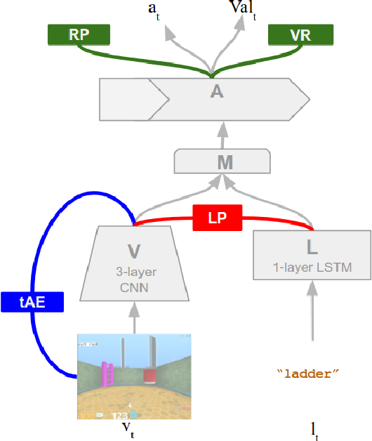

Introduction
This paper explores the idea of fast mapping on a multi-model, in a simulated 3D environment using reinforcement learning. It presents a different approach from earlier attempts made in the field of linguistic learning, which were either hard coded or rule based and did not leave much room for improvising learning. Whereas this paper shows the model which is able to acquire new words when trained with reinforcement learning and textual instructions. The agent is assigned with tasks to find and pickup objects in the setting, using visual input and is driven by reward.
Agent Design and Experiments
The environment comprises of two connected rooms with different set of objects. In this simulated 3D environment, the agent perceives it through continuous visual input and the textual instruction and is expected to explore the surrounding and objects, while simultaneously learning the meaning of new words.

TThe agent is designed as a neural network consisting of four inter-connected modules. The visual model is encoded by vision module V and instructions are encoded by language module L. The mixing module M determines how to combine both signals before passing them to LSTM action module A.
Experiments Result
- The learning rate is faster when model has prior knowledge of words.
- Existing semantic knowledge accelerates the acquisition of new words.
- Curriculum training is required to solve complex task
Conclusion
Strong Points
The author tried different setup and environment and provided a picture of what the model learned in these different settings. The different experiments performed on the agent exhibits its ability to learn and decipher multiple words and apply this knowledge on interpreting unfamiliar objects and how it reuses these concepts to acquire new vocabulary. It gives a glimpse into how humans acquire new language and uses their semantic knowledge to form a relation between different concepts.
Weak Points
Though the idea of relating natural language with physical world is fascinating but the tasks designed for the agent are very simple. The task to find and pick an object on the basis of instruction is quite simple with limited language capabilities. The environment also uses very few objects and makes the experiment slightly underwhelming. But these limitations leave possibility for future implementation of more complex tasks in sophisticated environment.